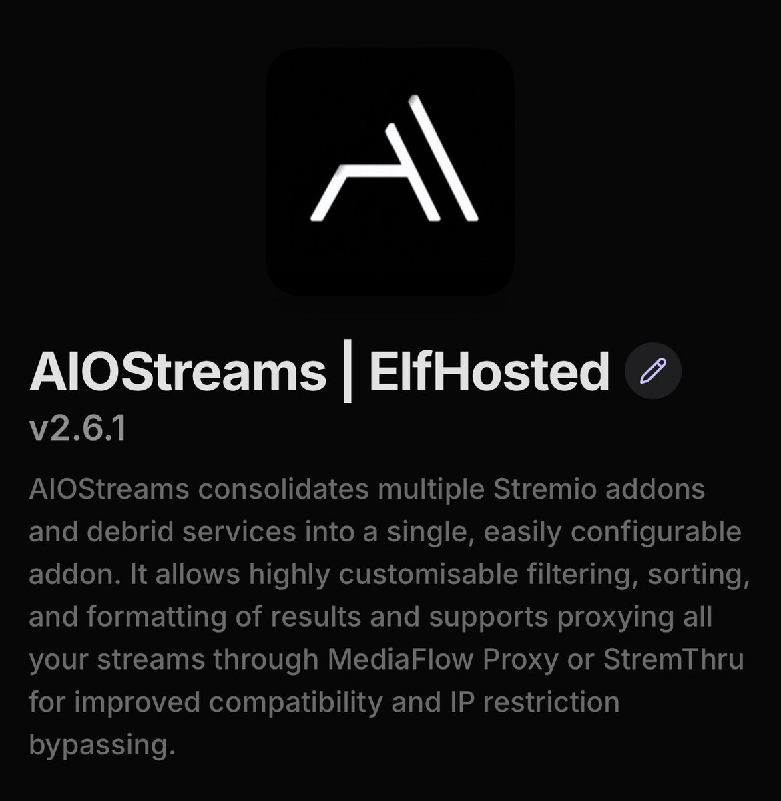
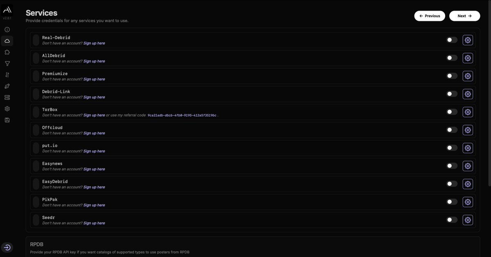
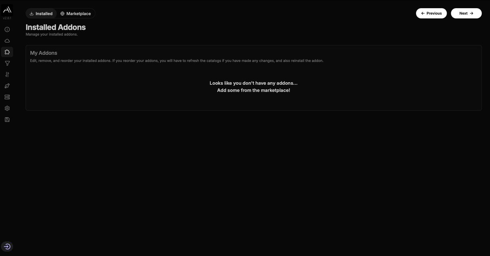
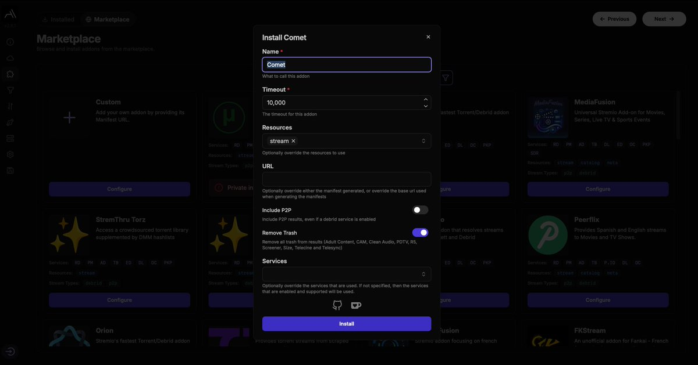
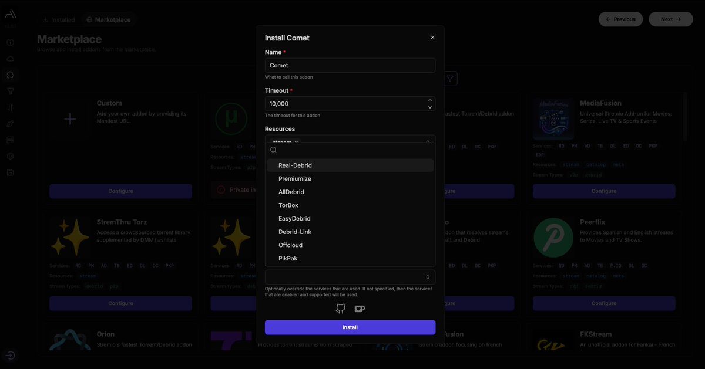
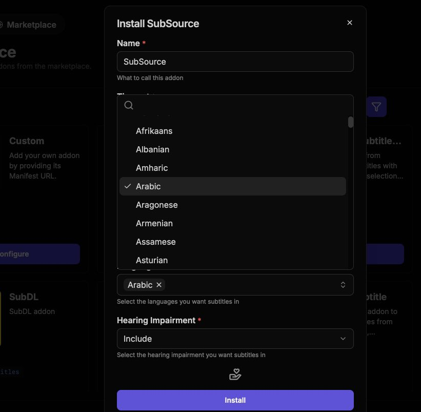
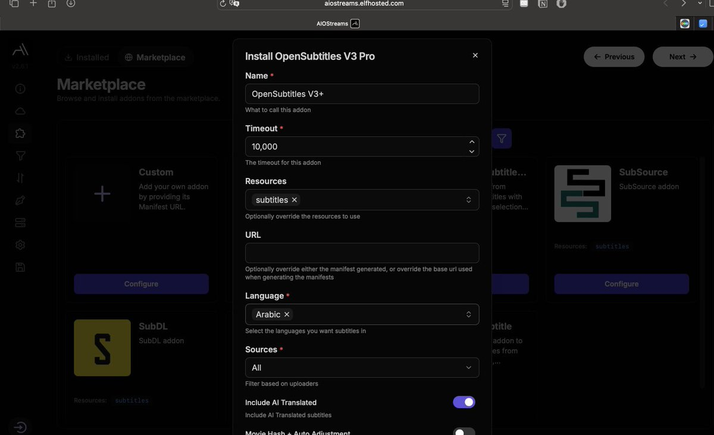
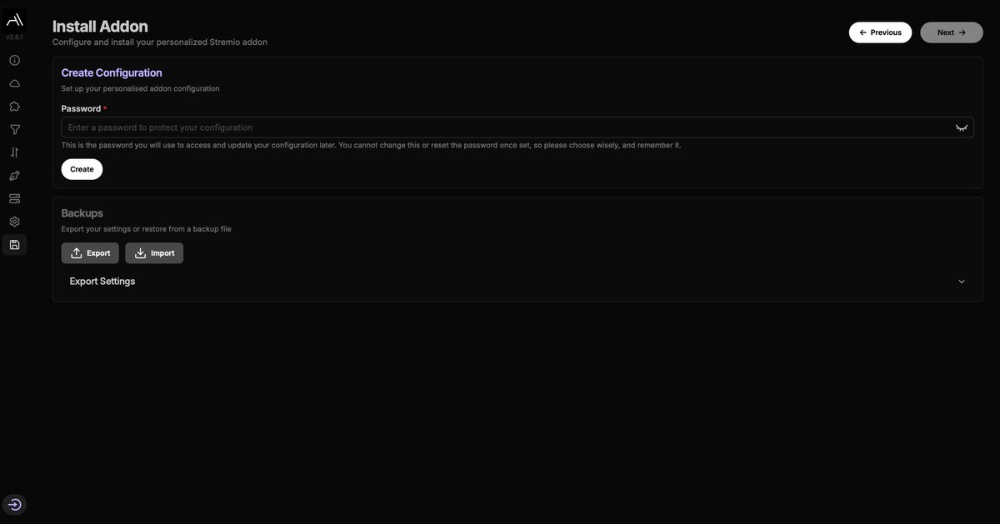

في هذا الشرح بنتعرف على طريقة إعداد إضافة AIOStreams الشاملة لتجربة مشاهدة متكاملة.

هذه الصفحة مخصصة لمستخدمي Debrid أو المشتركين في خدمات مدفوعة. إذا كنت مشتركاً، اختر نوع الخدمة التي تستخدمها، واضغط على أيقونة الإعدادات وألصق الـ API الخاص بك، ثم فعل الخدمة. إذا لم تكن مشتركاً، يمكنك الضغط على next.

هنا صفحة الإضافات. لتثبيت الأدوات، توجه لقسم marketplace. إليك أشهر أدوات المشاهدة المتوفرة:

إذا كنت ترغب في الإضافات المجانية فقط، اختر الأدوات المجانية واضغط على configure ثم install بدون أي تعديلات إضافية.

أما إذا كنت مستخدم Debrid، فتوجه لكل خدمة واختر service ثم الخدمة التي تشترك فيها.

توفر الإضافة خيارات ترجمة متعددة:
ملاحظة: بعض الأدوات تجبرك على إضافة اللغة، لا تنسَ اختيار العربية فقط.


بعد الانتهاء من جميع الإعدادات، انتقل إلى أسفل الصفحة واضغط على Save & install. ستحتاج لوضع كلمة مرور لحفظ إعداداتك، ثم سيظهر لك خيار install للبدء في استخدام الإضافة.

رابط الأداة: aiostreams.elfhosted.com